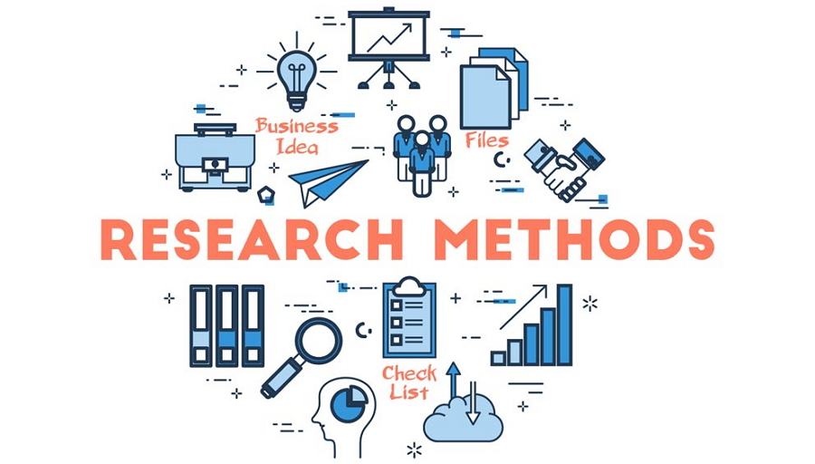
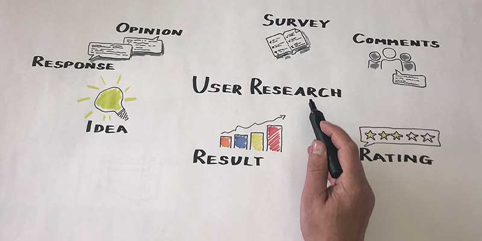

Lavender Irons M.S.Ed.
Lavender Irons M.S.Ed.
I obtained a bachelor's in psychology to understand the behaviors and motivations of individuals. I worked as a social worker in various capacities; child abuse and neglect, mental health issues in children and adults, and social issues. Deciding to work more with children, I obtained a master's in education. I taught for a few years, then transition to an administrator at a university.
For career development and to expand my knowledge, I completed classes in user research and technology. I strive to gain insight into people’s actions. I am persistent and systematic in solving problems and have a passion for learning.
I apply past knowledge and skills to qualitive and quantitative research methods. Qualitative methods I have utilize include case studies, focus groups, interviews, and additional information gathering methods. I also have experience with quantitative methods, such as; questionnaires, surveys, observations, and data analysis.
I am currently exploring doctorate programs in human-computer interaction.
Below is a representation of my proficiency in each skill. I am more than confident in my abilities, but strive to continue to improve my knowledge. I have taught myself a variety of skills, rather than focusing on a specialization.
I am an inquisitive person, idealistic in improving lives. I have an understanding and empathy to a diverse population. I can assimilate new ideas quickly and efficiently.
I am trained in qualitative and quantitative research and methodical in details. I have considerable analytical, problem solving, and design skills. I have conducted research in both school and employment.
Throughout my career, I have worked both collaboratively and as a leader. As a social worker, I attended case meetings to discuss care plans. I created and presented care plans when assigned to the client. As an educator; I lead and participated in Individual Education Plan(IEP) meetings, instructional and curriculum projects, as well as various other meetings and projects.
Managed social work and education social media. Presentations up to 100 people. Developed presentations for administration staff. Constructive feedback and motivation.
I understand usage of qualitative research methods. I can interpret results and provide valuable insights. I have the ability to communicate research outcomes that resonate actionable conclusions.
I have the ability to understand data and use numerical evidence systematically. I am experienced in choosing a method to assess and use quantitative evidence. I understand statistical techniques and the ability to validate and interrogate numerical data for actionable insight.
I understand how to examine an issue from various perspectives. To view data gained from analysis, develop insights with stakeholders, and observe pitfalls.
Certificates earned through courses. I continue my career development with online courses.
© Copyright Lavender Irons 2020

{kind=link}
{kind=link}
{kind=link}
{kind=link}
{kind=link}
{kind=link}
{kind=link}
{kind=link}
{kind=link}
{kind=link}